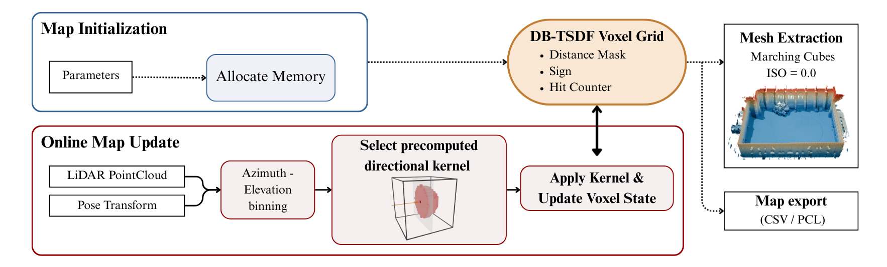

Directional Bitmask-based Truncated Signed Distance Fields
for Efficient
Volumetric Mapping
DB-TSDF is a high-efficiency, CPU-only framework for volumetric mapping. A directional bitmask-based integration scheme fuses each LiDAR return into the voxel grid with a single constant-time bitwise update, giving predictable per-scan runtime — independent of grid resolution — and high-fidelity reconstructions on platforms with limited GPU resources.

Each LiDAR return selects a precomputed, direction-dependent kernel and updates the voxel's truncated distance mask with a single bitwise AND, while a hemispherical shadow region confirms occupancy via a saturating counter.
Kernel size and mask width are fixed, so the cost per return is constant and independent of grid resolution — and a compact, cache-friendly voxel layout keeps high-resolution, multi-threaded CPU mapping fast.
Each LiDAR return selects a precomputed kernel aligned to its azimuth/elevation, modeling beam geometry and occlusion directly in 3D.
Truncated distances are stored as compact bitmasks updated with a single bitwise AND — a 16-bit layout keeps the per-voxel footprint at just a few bytes.
The cost of integrating each LiDAR return is fixed and independent of voxel grid resolution, giving predictable runtime even at high resolutions.
A cache-friendly, compact voxel layout and a multi-threaded C++/ROS 2 implementation deliver high-resolution reconstruction without relying on a GPU.
Benchmarked against state-of-the-art volumetric mapping methods on the Mai City and Newer College datasets, using the SHINE-Mapping evaluation pipeline.
The figures and tables above reflect the 32-bit variant evaluated in the paper (~150 ms/frame). The 16-bit version released in this repository is a newer, leaner iteration that runs in just 20–40 ms per scan.
| Method | Acc. ↓ | Comp. ↓ | C-L1 ↓ | Recall ↑ | F-score ↑ |
|---|---|---|---|---|---|
| VDB-GPDF | 3.8 | 8.5 | 6.2 | 83.3 | 88.7 |
| Voxblox | 1.8 | 7.1 | 4.8 | 84.0 | 90.9 |
| VDB Fusion | 1.3 | 6.9 | 4.5 | 90.2 | 94.1 |
| PUMA | 1.2 | 32.0 | 16.9 | 78.8 | 87.3 |
| SHINE-Mapping | 1.1 | 3.2 | 2.9 | 95.2 | 95.9 |
| DB-TSDF (ours) | 1.7 | 4.6 | 3.1 | 93.6 | 96.6 |
| Method | Acc. ↓ | Comp. ↓ | C-L1 ↓ | Recall ↑ | F-score ↑ |
|---|---|---|---|---|---|
| VDB-GPDF | 7.5 | 11.9 | 9.7 | 91.7 | 90.4 |
| Voxblox | 9.3 | 14.9 | 12.1 | 87.8 | 87.9 |
| VDB Fusion | 6.9 | 12.0 | 9.4 | 91.3 | 92.6 |
| PUMA | 7.7 | 15.4 | 11.5 | 89.9 | 91.9 |
| SHINE-Mapping | 6.7 | 10.0 | 8.4 | 93.6 | 93.7 |
| DB-TSDF (ours) | 9.1 | 10.7 | 9.9 | 92.4 | 91.3 |
If you use DB-TSDF in your research, please cite our paper:
@inproceedings{maese2026dbtsdf,
title={DB-TSDF: Directional Bitmask-based Truncated Signed Distance Fields for Efficient Volumetric Mapping},
author={Maese, Jose E. and Caballero, Fernando and Merino, Luis},
booktitle={2026 IEEE International Conference on Robotics and Automation (ICRA)},
year={2026}
}